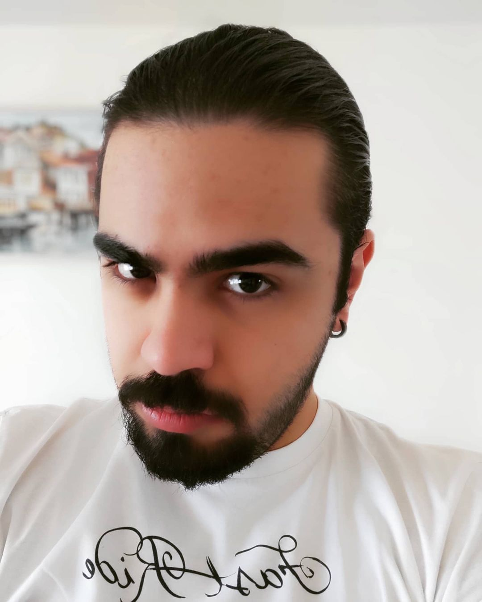

Ömer Mert Demirel
Hakkımda
Kahramanmaraşta doğup liseye kadar olan eğitimimi tamamladıktan sonra lise için kayseriye taşındım.
4 yıllık lise eğitimimi Nuh Mehmet Baldöktü Anadolu Lisesinde okuduktan sonra 3 yıl ODTÜ KKK`de Bilgisayar mühendisliği okudum.
Daha sonra Kayseri Erciyes Üniversitesine geçiş yaptım ve buradan 2022 yılında mezun oldum.
İlgi Alanlarım
Hobilerim
- FRP oynamak-oynatmak
- Bilgisayar oyunları oynamak ve incelemek
- Bilim kurgu ve fantastik türlerde kitap okumak
- Orjinal dilinde film, dizi, anime izlemek
Sevmediğim aktiviteler
- Kendimi tekrar etmek
- Anlamsız tartışmalarla vakit kaybetmek
- Bir yere vaktinde gidememek
- Yapmacık davranan insanların yanında bulunmak
- Duygusal davranarak herhangi bir konuda kaybetmek
Sevdiğim Kitaplar
Sevdiğim Diziler
NOT
ilk html sayfamı ziyaret ettiğin için teşekkürler.
Bu insanlık için küçük ama benim için büyük bir adımdı...
Teşekkürler patika.dev!